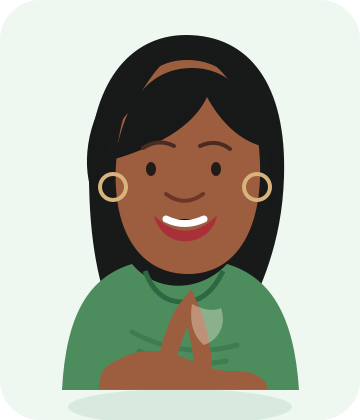

Vamos aprender a escolher melhor?
Não precisa entender de política.
Uma coisa de cada vez.
Antes de escolher uma pessoa...
Dona Antonia já começou a pensar em quem vai votar.
Cada cargo tem um trabalho diferente. Saber isso ajuda a entender se uma promessa faz sentido.
O que vou escolher nesta eleição?
Nas Eleições 2026, Dona Antonia vai fazer seis escolhas na urna.
Deputado Estadual ou Distrital
Senador — primeira vaga
Senador — segunda vaga
Governador
Presidente
É muita coisa para decorar de uma vez. E você não precisa decorar agora.
Esses cargos fazem trabalhos diferentes.
Podemos começar separando em dois grupos simples:
ajudam a administrar o governo.
Deputados e Senadores
participam da criação das leis e fiscalizam.
Existem mais detalhes, mas não precisamos aprender tudo agora.
Um candidato fez uma promessa.
Antes, Dona Antonia talvez pensasse apenas: “Gostei dessa promessa.”
Um candidato pode prometer algo que não depende só dele — ou que não faz parte daquele cargo.
A promessa parece boa. E agora?
Dona Antonia não pergunta apenas “eu gostei?”.
De onde vêm os recursos?
Não precisa entender de economia para pedir uma explicação simples.
E quem é esse candidato?
Dona Antonia quer conhecer melhor quem está pedindo o voto dela.
O que ela fala combina com o que já fez?
Onde posso encontrar informações sobre ela?
Você pode ouvir outras pessoas. Mas também pode procurar informação e pensar por você.
“Dona Antonia, olha isso!”
Chegou uma mensagem: “URGENTE! Veja isso antes de votar!”
VEJA quem publicou.
CONFIRA em outras fontes.
Nem tudo que chega no celular é verdade. Não precisa passar adiante na hora.
Agora é com você.
Antes de decidir, Dona Antonia faz algumas perguntas.
A promessa tem a ver com esse cargo?
Procurei conhecer o candidato?
Conferi as informações importantes?
Você não precisa saber tudo sobre política. Precisa saber fazer boas perguntas.
Você já tem uma boa base para pensar no seu voto.
Quando quiser, podemos subir mais um degrau e entender melhor como a política funciona.